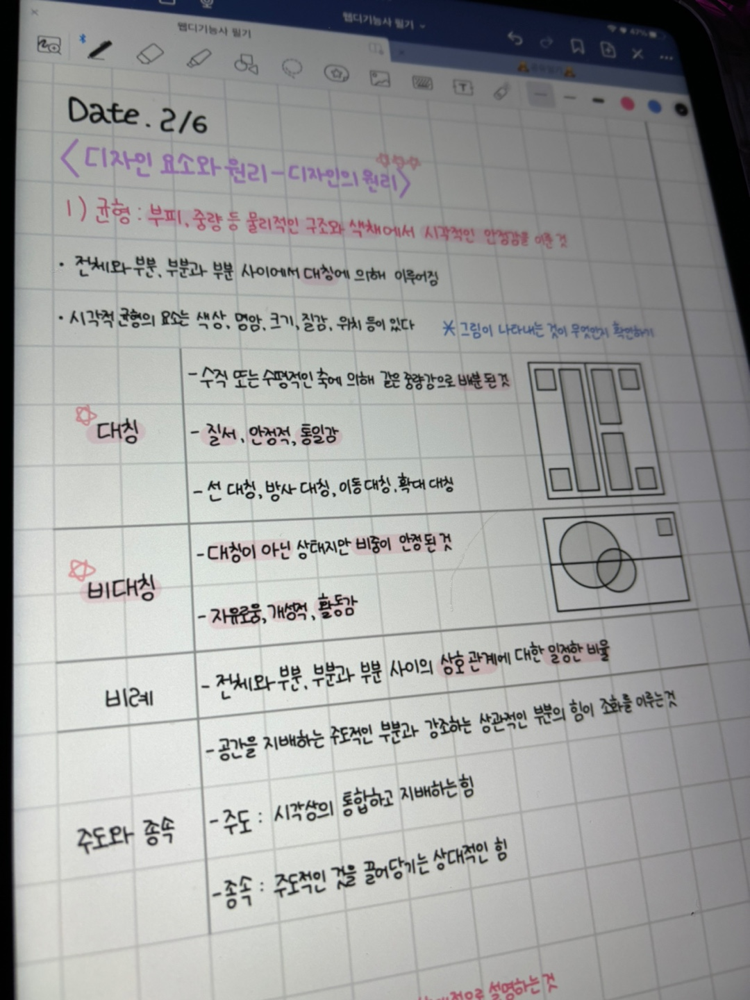

- 우당탕탕 하루일기
- 쩝쩝박사 리뷰
- 우당탕탕 오공완
우당탕탕 오공완

웹디기능사 공부중...
24년 새해 들고나서부터 뭔가 새로운 목표가 많이 생겼는데.. 그 중에 하나인 웹디자인 기능사 자격증..!
디자인 분야 중에 가장 자신 없고 해보지않은..(야매로는 조금 해봄) 분야지만 코딩을 공부해보고 싶어서 시작하게됐당
24년의 큰 목표가 "조금이라도 더 발전한 내가 되기" 기도 하고, "뭐가 되길 원한다면 뭐라도 하면서 바래야한다" 고 생각하기 때문에!
코딩이라구 해봤자 아직은 HTML 정도지만 그래도 시작이 반이니까 ㅎㅎ
찍먹이 되더라도 이 시간이 사라지는 건 아니라고 생각하면서 공부 중이다! 그리구 생각보다 재밌음..
태이가 열공하라고 빌려준 아이패드도 넘넘 도움이 많이되구.. 고마워 태이쨩!!!
필기는 기출문제만 꾸준히 풀어봐도 평균 60점은 웬만하면 넘는 듯 해서 최근에 공부 방향을 바꿨다
실기 풀이영상 말고 최종 목표인 프론트엔드 개발자 쪽으로 공부하기위해서 천천히 기초부터 다져볼 생각이다
어차피 기초는 같으니까..? ㅎㅎ 뭐가 됐던 시작해본 내가 대견하당 꾸준히 해보자구!